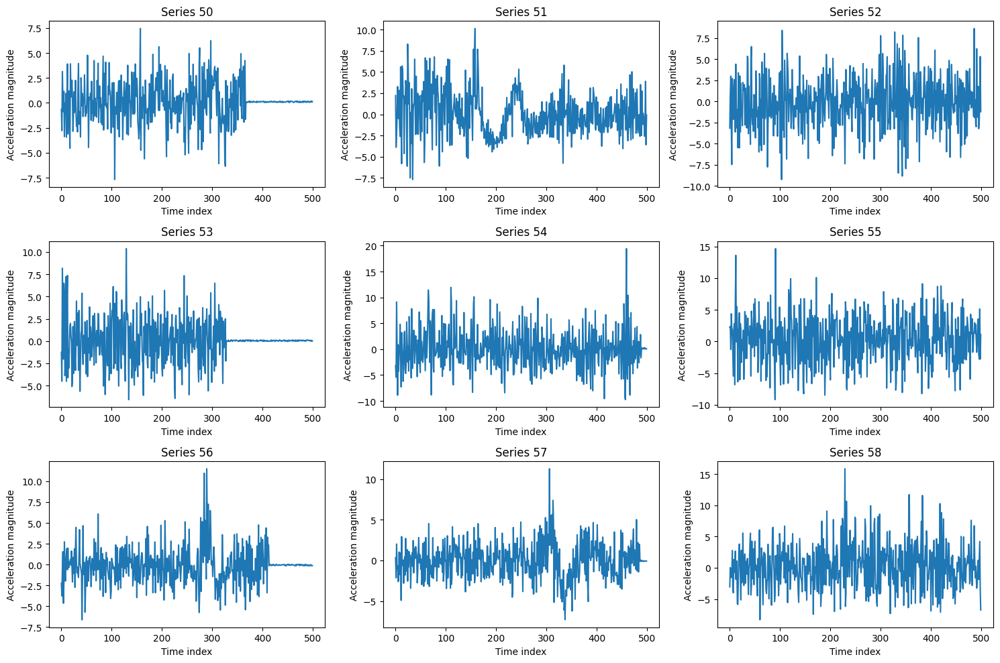
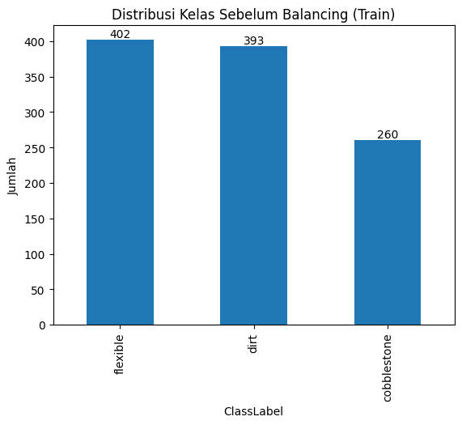
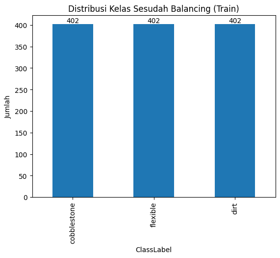

Pre-Processing Data#
import pandas as pd
from sklearn.model_selection import train_test_split
from imblearn.over_sampling import RandomOverSampler
from sklearn.model_selection import train_test_split
C:\Users\USERB-PC\AppData\Local\Programs\Python\Python39\lib\site-packages\scipy\__init__.py:159: UserWarning: A NumPy version >=1.21.6 and <1.28.0 is required for this version of SciPy (detected version 2.0.2)
warnings.warn(f"A NumPy version >={np_minversion} and <{np_maxversion}"
A module that was compiled using NumPy 1.x cannot be run in
NumPy 2.0.2 as it may crash. To support both 1.x and 2.x
versions of NumPy, modules must be compiled with NumPy 2.0.
Some module may need to rebuild instead e.g. with 'pybind11>=2.12'.
If you are a user of the module, the easiest solution will be to
downgrade to 'numpy<2' or try to upgrade the affected module.
We expect that some modules will need time to support NumPy 2.
Traceback (most recent call last): File "C:\Users\USERB-PC\AppData\Local\Programs\Python\Python39\lib\runpy.py", line 197, in _run_module_as_main
return _run_code(code, main_globals, None,
File "C:\Users\USERB-PC\AppData\Local\Programs\Python\Python39\lib\runpy.py", line 87, in _run_code
exec(code, run_globals)
File "C:\Users\USERB-PC\AppData\Roaming\Python\Python39\site-packages\ipykernel_launcher.py", line 18, in <module>
app.launch_new_instance()
File "C:\Users\USERB-PC\AppData\Local\Programs\Python\Python39\lib\site-packages\traitlets\config\application.py", line 1075, in launch_instance
app.start()
File "C:\Users\USERB-PC\AppData\Roaming\Python\Python39\site-packages\ipykernel\kernelapp.py", line 739, in start
self.io_loop.start()
File "C:\Users\USERB-PC\AppData\Local\Programs\Python\Python39\lib\site-packages\tornado\platform\asyncio.py", line 211, in start
self.asyncio_loop.run_forever()
File "C:\Users\USERB-PC\AppData\Local\Programs\Python\Python39\lib\asyncio\base_events.py", line 596, in run_forever
self._run_once()
File "C:\Users\USERB-PC\AppData\Local\Programs\Python\Python39\lib\asyncio\base_events.py", line 1890, in _run_once
handle._run()
File "C:\Users\USERB-PC\AppData\Local\Programs\Python\Python39\lib\asyncio\events.py", line 80, in _run
self._context.run(self._callback, *self._args)
File "C:\Users\USERB-PC\AppData\Roaming\Python\Python39\site-packages\ipykernel\kernelbase.py", line 545, in dispatch_queue
await self.process_one()
File "C:\Users\USERB-PC\AppData\Roaming\Python\Python39\site-packages\ipykernel\kernelbase.py", line 534, in process_one
await dispatch(*args)
File "C:\Users\USERB-PC\AppData\Roaming\Python\Python39\site-packages\ipykernel\kernelbase.py", line 437, in dispatch_shell
await result
File "C:\Users\USERB-PC\AppData\Roaming\Python\Python39\site-packages\ipykernel\ipkernel.py", line 362, in execute_request
await super().execute_request(stream, ident, parent)
File "C:\Users\USERB-PC\AppData\Roaming\Python\Python39\site-packages\ipykernel\kernelbase.py", line 778, in execute_request
reply_content = await reply_content
File "C:\Users\USERB-PC\AppData\Roaming\Python\Python39\site-packages\ipykernel\ipkernel.py", line 449, in do_execute
res = shell.run_cell(
File "C:\Users\USERB-PC\AppData\Roaming\Python\Python39\site-packages\ipykernel\zmqshell.py", line 549, in run_cell
return super().run_cell(*args, **kwargs)
File "C:\Users\USERB-PC\AppData\Local\Programs\Python\Python39\lib\site-packages\IPython\core\interactiveshell.py", line 3048, in run_cell
result = self._run_cell(
File "C:\Users\USERB-PC\AppData\Local\Programs\Python\Python39\lib\site-packages\IPython\core\interactiveshell.py", line 3103, in _run_cell
result = runner(coro)
File "C:\Users\USERB-PC\AppData\Local\Programs\Python\Python39\lib\site-packages\IPython\core\async_helpers.py", line 129, in _pseudo_sync_runner
coro.send(None)
File "C:\Users\USERB-PC\AppData\Local\Programs\Python\Python39\lib\site-packages\IPython\core\interactiveshell.py", line 3308, in run_cell_async
has_raised = await self.run_ast_nodes(code_ast.body, cell_name,
File "C:\Users\USERB-PC\AppData\Local\Programs\Python\Python39\lib\site-packages\IPython\core\interactiveshell.py", line 3490, in run_ast_nodes
if await self.run_code(code, result, async_=asy):
File "C:\Users\USERB-PC\AppData\Local\Programs\Python\Python39\lib\site-packages\IPython\core\interactiveshell.py", line 3550, in run_code
exec(code_obj, self.user_global_ns, self.user_ns)
File "C:\Users\USERB-PC\AppData\Local\Temp\ipykernel_5288\4017380369.py", line 2, in <module>
from sklearn.model_selection import train_test_split
File "C:\Users\USERB-PC\AppData\Local\Programs\Python\Python39\lib\site-packages\sklearn\__init__.py", line 82, in <module>
from .base import clone
File "C:\Users\USERB-PC\AppData\Local\Programs\Python\Python39\lib\site-packages\sklearn\base.py", line 17, in <module>
from .utils import _IS_32BIT
File "C:\Users\USERB-PC\AppData\Local\Programs\Python\Python39\lib\site-packages\sklearn\utils\__init__.py", line 17, in <module>
from scipy.sparse import issparse
File "C:\Users\USERB-PC\AppData\Local\Programs\Python\Python39\lib\site-packages\scipy\sparse\__init__.py", line 274, in <module>
from ._csr import *
File "C:\Users\USERB-PC\AppData\Local\Programs\Python\Python39\lib\site-packages\scipy\sparse\_csr.py", line 11, in <module>
from ._sparsetools import (csr_tocsc, csr_tobsr, csr_count_blocks,
---------------------------------------------------------------------------
AttributeError Traceback (most recent call last)
AttributeError: _ARRAY_API not found
---------------------------------------------------------------------------
ImportError Traceback (most recent call last)
Cell In[1], line 2
1 import pandas as pd
----> 2 from sklearn.model_selection import train_test_split
3 from imblearn.over_sampling import RandomOverSampler
4 from sklearn.model_selection import train_test_split
File ~\AppData\Local\Programs\Python\Python39\lib\site-packages\sklearn\__init__.py:82
80 from . import _distributor_init # noqa: F401
81 from . import __check_build # noqa: F401
---> 82 from .base import clone
83 from .utils._show_versions import show_versions
85 __all__ = [
86 "calibration",
87 "cluster",
(...)
128 "show_versions",
129 ]
File ~\AppData\Local\Programs\Python\Python39\lib\site-packages\sklearn\base.py:17
15 from . import __version__
16 from ._config import get_config
---> 17 from .utils import _IS_32BIT
18 from .utils._set_output import _SetOutputMixin
19 from .utils._tags import (
20 _DEFAULT_TAGS,
21 )
File ~\AppData\Local\Programs\Python\Python39\lib\site-packages\sklearn\utils\__init__.py:17
15 import warnings
16 import numpy as np
---> 17 from scipy.sparse import issparse
19 from .murmurhash import murmurhash3_32
20 from .class_weight import compute_class_weight, compute_sample_weight
File ~\AppData\Local\Programs\Python\Python39\lib\site-packages\scipy\sparse\__init__.py:274
271 import warnings as _warnings
273 from ._base import *
--> 274 from ._csr import *
275 from ._csc import *
276 from ._lil import *
File ~\AppData\Local\Programs\Python\Python39\lib\site-packages\scipy\sparse\_csr.py:11
9 from ._matrix import spmatrix, _array_doc_to_matrix
10 from ._base import _spbase, sparray
---> 11 from ._sparsetools import (csr_tocsc, csr_tobsr, csr_count_blocks,
12 get_csr_submatrix)
13 from ._sputils import upcast
15 from ._compressed import _cs_matrix
ImportError: numpy.core.multiarray failed to import
df = pd.read_csv("Datasets/AsphaltPavementType_combine.csv")
Fitur Selection#
Data time series memiliki dimensi yang sangat tinggi (lebih dari 2000 timestamp per sampel). Untuk menjaga model tetap efisien dan mengurangi risiko overfitting, dilakukan pemotongan (cropping) menjadi 500 timestamp pertama. Dengan sampling ~100 Hz, segmen ini setara sekitar 5 detik, yang dinilai sudah cukup merepresentasikan pola getaran permukaan jalan. Pemotongan ini juga membantu mengurangi noise yang dapat muncul pada bagian sinyal selanjutnya.
X = df.drop(columns=["ClassLabel"]).to_numpy(dtype=float)
y = df["ClassLabel"]
n_timestamps_new = 500
X_crop = X[:, :n_timestamps_new]
print("Shape sebelum :", X.shape)
print("Shape sesudah :", X_crop.shape)
Shape sebelum : (1319, 2371)
Shape sesudah : (1319, 500)
import matplotlib.pyplot as plt
out_idx = []
for i in range(50, 100):
out_idx.append(i)
sample_idx = out_idx
rows, cols = 3, 3
fig, axes = plt.subplots(rows, cols, figsize=(15, 10))
for ax, i in zip(axes.ravel(), sample_idx):
ax.plot(X_crop[i])
ax.set_title(f"Series {i}")
ax.set_xlabel("Time index")
ax.set_ylabel("Acceleration magnitude")
plt.tight_layout()
plt.show()

import pandas as pd
n_timestamps_new = 500
feature_names = [f"TimeSeriesData_{i}" for i in range(n_timestamps_new)]
X_crop_df1 = pd.DataFrame(X_crop, columns=feature_names)
Xy_crop_df1 = X_crop_df1.copy()
Xy_crop_df1["ClassLabel"] = y.values # atau y.to_numpy()
Xy_crop_df1.to_csv("Fix_datasets/AsphaltPavementType_crop400_new.csv", index=False)
Xy_crop_df1
| TimeSeriesData_0 | TimeSeriesData_1 | TimeSeriesData_2 | TimeSeriesData_3 | TimeSeriesData_4 | TimeSeriesData_5 | TimeSeriesData_6 | TimeSeriesData_7 | TimeSeriesData_8 | TimeSeriesData_9 | ... | TimeSeriesData_491 | TimeSeriesData_492 | TimeSeriesData_493 | TimeSeriesData_494 | TimeSeriesData_495 | TimeSeriesData_496 | TimeSeriesData_497 | TimeSeriesData_498 | TimeSeriesData_499 | ClassLabel | |
|---|---|---|---|---|---|---|---|---|---|---|---|---|---|---|---|---|---|---|---|---|---|
| 0 | -2.876570 | 1.663488 | -4.498386 | 3.488434 | 0.395251 | -3.587129 | 0.773357 | -0.915250 | 2.573000 | 1.361841 | ... | -1.966742 | 2.541954 | 3.979687 | 0.069312 | 0.002890 | 0.019680 | 0.025300 | -0.048612 | -0.079107 | cobblestone |
| 1 | -0.701747 | -0.570766 | 0.566515 | -0.218081 | 1.199675 | 2.872561 | 1.940022 | -2.274027 | 1.609701 | 4.039853 | ... | -0.048847 | -0.035815 | 0.092891 | 0.119380 | 0.028519 | 0.098225 | 0.096499 | 0.056824 | -0.032873 | cobblestone |
| 2 | 4.369829 | -3.141377 | 3.529192 | 2.660682 | 2.462394 | -1.882157 | 0.104404 | 0.942166 | 1.283458 | -3.968304 | ... | 0.350013 | 0.512466 | 0.347847 | 0.454590 | 0.345583 | 0.356150 | 0.526843 | 0.378212 | 0.405304 | cobblestone |
| 3 | 8.916818 | -3.653964 | -3.222407 | 5.952949 | -2.532802 | -1.536643 | 2.157628 | 0.213207 | -0.088351 | 2.634485 | ... | 0.107631 | 0.035181 | 0.044870 | 0.007413 | 0.052851 | 0.037498 | 0.048568 | 0.098082 | -0.041289 | cobblestone |
| 4 | 2.233004 | 0.050001 | -2.284447 | -1.813584 | 2.641198 | -1.083767 | 2.177665 | -0.227288 | -1.730810 | 1.752036 | ... | -1.007197 | 1.355615 | 1.069424 | -5.078111 | 5.725278 | -1.705188 | -1.281729 | 3.449931 | 0.033489 | cobblestone |
| ... | ... | ... | ... | ... | ... | ... | ... | ... | ... | ... | ... | ... | ... | ... | ... | ... | ... | ... | ... | ... | ... |
| 1314 | 0.880715 | -2.346590 | -2.329858 | 2.212091 | -1.166301 | 0.371006 | 1.442045 | -0.190440 | -0.507736 | -0.681386 | ... | -1.123848 | -3.599494 | 1.234706 | 1.238040 | -0.097598 | 1.813744 | -2.801330 | 0.318330 | 2.075006 | dirt |
| 1315 | -0.725810 | 0.307290 | -0.665848 | 0.014449 | 0.020445 | -0.815619 | -0.315867 | 0.660846 | -0.794393 | 0.261320 | ... | -0.027785 | -0.006332 | -0.013147 | 0.007824 | 0.008854 | -0.013834 | -0.002892 | -0.013829 | -0.017042 | flexible |
| 1316 | 6.432972 | -0.184155 | -4.374001 | -0.011607 | -1.068614 | 4.028121 | 2.998381 | -3.004130 | 2.899988 | -0.824554 | ... | 1.337614 | 1.917584 | 0.538787 | -2.426711 | -3.203628 | 2.804111 | -2.418051 | -0.364512 | 3.492263 | cobblestone |
| 1317 | -0.416838 | 2.559118 | -1.690034 | -0.278789 | 0.573216 | 0.116075 | -0.407203 | 1.595101 | -4.097763 | 1.875713 | ... | -0.039176 | 0.011263 | 0.009366 | 0.044120 | 0.044053 | -0.069568 | -0.017158 | -0.036995 | -0.061221 | dirt |
| 1318 | -0.711354 | -3.268203 | -0.820679 | 1.116180 | -2.884878 | -0.813056 | -1.659677 | -2.995004 | 1.513465 | 0.041381 | ... | 0.270095 | 0.222703 | 0.181616 | 0.201826 | 0.319767 | 0.249213 | 0.286046 | 0.234776 | 0.275198 | dirt |
1319 rows × 501 columns
Balancing Data#
Dataset memiliki distribusi kelas yang tidak seimbang, sehingga dilakukan data balancing pada data training menggunakan metode oversampling. Proses ini bertujuan untuk mengurangi bias model terhadap kelas mayoritas dan meningkatkan performa klasifikasi pada kelas minoritas. Data pengujian tidak ikut dilakukan balancing agar evaluasi model tetap objektif.
from sklearn.model_selection import train_test_split
import numpy as py
from imblearn.over_sampling import RandomOverSampler
X_train, X_test, y_train, y_test = train_test_split(
X_crop, y,
test_size=0.2,
random_state=42,
stratify=y
)
print(y_train.value_counts())
ClassLabel
flexible 402
dirt 393
cobblestone 260
Name: count, dtype: int64
ros = RandomOverSampler(random_state=42)
X_train_bal, y_train_bal = ros.fit_resample(X_train, y_train)
print("Sebelum balancing:")
print(y_train.value_counts())
print("\nSesudah balancing:")
print(y_train_bal.value_counts())
Sebelum balancing:
ClassLabel
flexible 402
dirt 393
cobblestone 260
Name: count, dtype: int64
Sesudah balancing:
ClassLabel
cobblestone 402
flexible 402
dirt 402
Name: count, dtype: int64
import matplotlib.pyplot as plt
fig, ax = plt.subplots()
y_train.value_counts().plot(kind="bar", ax=ax)
ax.set_title("Distribusi Kelas Sebelum Balancing (Train)")
ax.set_xlabel("ClassLabel")
ax.set_ylabel("Jumlah")
for p in ax.patches:
ax.annotate(f"{p.get_height():.0f}",
(p.get_x() + p.get_width()/2, p.get_height()),
ha='center', va='bottom')
plt.show()

fig, ax = plt.subplots()
y_train_bal.value_counts().plot(kind="bar", ax=ax)
ax.set_title("Distribusi Kelas Sesudah Balancing (Train)")
ax.set_xlabel("ClassLabel")
ax.set_ylabel("Jumlah")
for p in ax.patches:
ax.annotate(f"{p.get_height():.0f}",
(p.get_x() + p.get_width()/2, p.get_height()),
ha='center', va='bottom')
plt.show()
